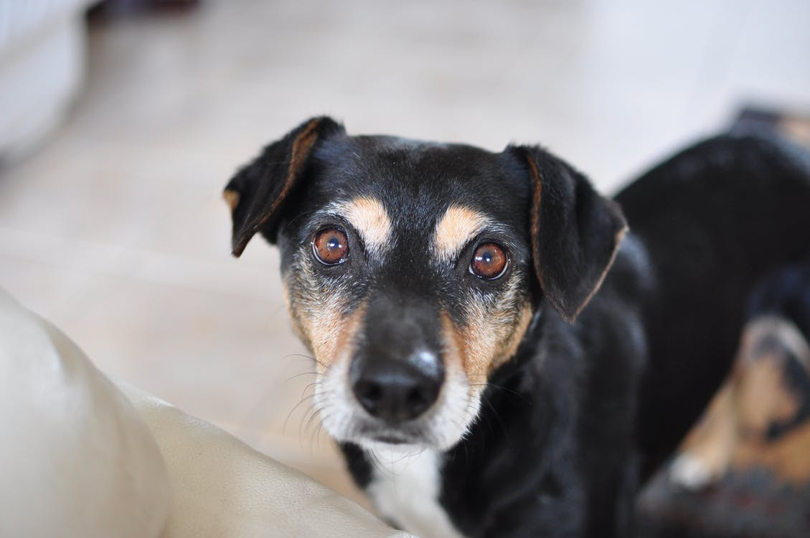

Sally
This little girl is only 2-years old. She was mistreated byh er previous owners, which doesn't seem to have ruined her morale. She loves playing with other dogs.
Fernand
This pup is 6-years old and can get along with anyone. He loves running in fields and climbing hills. He is fully trained (can play dead, sit, nod, dance).

Kylie
This little 4-year old diva loves the attention. She used to be in a circus act but since then been abandoned. She is desperately waiting for a new caring home.
Benny
Benny is only 4-months old, and has enough energy to power-up a city. He loves running and jumping, and gets along with all other dogs and cats in the building.